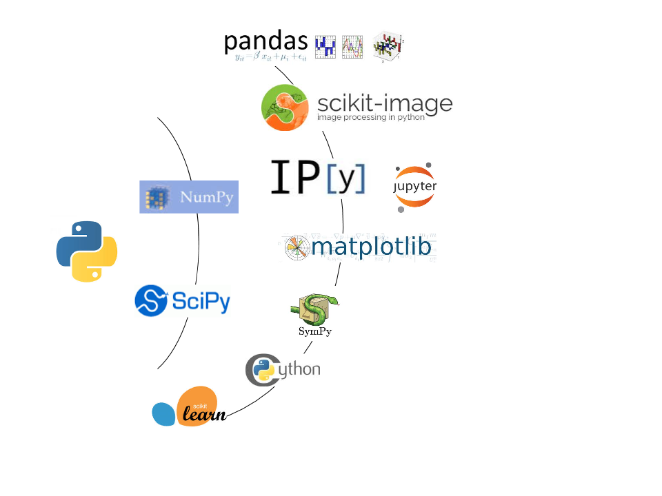

The Data Science Revolution
in biomedical image processing
Ariel Rokem, University of Washington eScience Institute
Follow along at:

Data Science

$ 37.8M for 5 years:
"Moore-Sloan Data Science Environments"
Additional funding from:
- Washington Research Foundation
- National Science Foundation
- Bill & Melinda Gates Foundation
- National Institute for Mental Health
Outline
- Big data technology: models of brain anatomy in MRI data
- Machine intelligence: towards computer-assisted diagnosis
- Virtual prototyping: improving retinal prosthetics
- Open source software for science
- Data sharing made easy and beautiful
The era of brain observatories
Allen Institute for Brain Science
UK Biobank
The Human Connectome Project
- More than 1,000 participants
- High-quality measurements of MRI
- Genetics, cognitive measures, etc...
Normal behavior is supported by brain connectivity


Not just passive cables
Brain connections change with development
Individual differences account for differences in behaviour
Adapt with learning
This has clinical significance
Magnetic Resonance Imaging (MRI)
Neural activity: functional MRI
Anatomy: structural MRI
...
Brain connectivity: diffusion MRI

Diffusion MRI
Diffusion MRI
Diffusion MRI
Modeling diffusion
Diffusion statistics


From diffusion to tracks

From diffusion to tracks


From diffusion to tracks
Diffusion MRI: the challenge of validation

A statistical learning approach


longitudinal fasciculus

Human Connectome Project -- data volume (GB)
What computational system should we use to analyze these data?
Database support for image analytics at scale
- Parmita Mehta (CSE)
- Sven Dorkenwald (CSE)
- Dongfang Zhao (eScience/CSE)
- Tomer Kaftan (CSE)
- Alvin Cheung (eScience/CSE)
- Magda Balazinska (eScience/CSE)
- Andy Connoly (Astronomy)
- Jake Vanderplas (Astronomy)
- Yusra AlSayyad (Astronomy)
Database support for image analytics at scale
- Declarative languages to access data
=> Select what to process and prepare the data
- Declarative languages for specifying computations
=> But can also deploy user-defined code
- Physical data independence
=> Data ingestion and distribution is automatic
- Infrastructure independence
=> Can be deployed in institutional HPC resources
=> Can be deployed in cloud computing systems
The argument for cloud computing
Scalable
The argument for cloud computing
Scalable
Elastic
Secure, reliable
Reproducible
On the other hand
It's too darn hard!
Requires familiarity with systems
Model comparison for the Human Connectome Project
DTI : 6 parameters
DKI : 15 parameters
10-fold cross-validation
900 participants
The argument for cloud computing:
Scalable
Elastic
Secure, reliable
Reproducible
Machine intelligence: towards computer-assisted diagnosis
With: Aaron Lee, Cecilia Lee, Sa Xiao, Yue Wu
UW Department of Ophthalmology
Eye diseases
Common
Debilitating
Many forms of eye disease are preventable/treatable
Age-related macular degeneration (AMD)
Optical Coherence Tomography (OCT)
High-fidelity in vivo measurements of retinal structure at micron resolutionThe UW OCT/EMR data-base
10 years (2006-2016)
9,285 patients
43,328 OCT volumes
2.64 million OCT images
2.5 TB of data
Linked to EPIC electronic medical records
For each OCT we know:
Visual acuity
OCT interpretation
Diagnosis
Treatment determinations
In some cases - longitudinal measurements
Inspired by architecture of the visual system
Learns a hierarchy of filters through exposure to examples
Accurate identification of clinical features
Save clinician time by presenting relevant evidence
Prevent error by providing educated guess
Advance research in large-scale data collections
Virtual prototyping: improving retinal prosthetics With: Michael Beyeler, Ione Fine, Geoff Boynton Scientific reproducibility
Open source software for science
The Python programming language:
Relatively easy to learn
Free and open source
"Batteries included"
Part of the NIPY community
Started in 2009 by Eleftherios Garyfallidis Contributors from at least six different countries and many different labs OCT interaretinal fluid segmenter:
Pulse2percept: models for retinal prosthetics:
Sharing data can be really challenging!
Large volumes
Domain specific or proprietary formats
Concerns about privacy and personal health information
Deep learning
Deep learning
Towards computer-assisted diagnosis
and the data science revolution
"An article about a computational result is advertising, not scholarship.
The actual scholarship is the full software environment, code and data,
that produced the result."
Buckheit and Donoho (1995)




DIPY: Diffusion MRI in Python
https://github.com/uw-biomedical-ml/irf-segmenter
https://uwescience.github.io/pulse2percept/
With Jason Yeatman, Adam Richie-Halford & Josh Smith.
https://yeatmanlab.github.io/Sarica_2017
"All across our campus, the process of discovery will increasingly rely on researchers’ ability to extract knowledge from vast amounts of data... In order to remain at the forefront, UW must be a leader in advancing these techniques and technologies, and in making [them] accessible to researchers in the broadest imaginable range of fields"